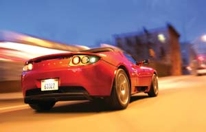

Racing To A Revolution
A multimillion dollar prize is up for grabs in the race to build a 100 mpg automobile.
By Todd Kaho
December 2007/January 2008
What if every garage in America had a car that could get 100 miles per gallon? The X Prize Foundation wants to see it happen, and they’re dangling a big green carrot in the form of a multimillion dollar reward. It will go to the first team to create a low-emission, 100 mpg car that’s safe, affordable and ready for mass production.
Jack McCornack, longtime Mother Earth News reader and designer of ultralight DIY sportscars, says outstanding fuel economy already is a reality for do-it-yourselfers. For the competition, McCornack is constructing a sporty two-seat, lightweight roadster designed around a small Kubota industrial turbo diesel engine. Mother will be onboard as an official sponsor of the entry.
“We’re breaking the problem of high mileage into its three components: engine efficiency, rolling resistance and aerodynamic drag,” McCornack says. “We’re not aiming to win this competition. Instead, our goal is to show what can be done with existing technology and a low budget. When we’re done, all the information will be available for anybody who wants to make one for themselves.”
The objective of the Automotive X Prize (AXP), according to the Foundation, is to “inspire a new generation of viable, super-efficient vehicles that help break our addiction to oil and stem the effects of climate change.” The contest is drawing international interest, with more than 30 teams from the United States, Germany, Switzerland and more already at work.
“The time for incremental change is over,” X Prize Foundation founder and CEO Peter Diamandis says. “We need radical breakthroughs to stem the consumption of fossil fuels. An X Prize can help make that happen.” The competition already has the endorsement of organizations such as the Apollo Alliance, Greenpeace, the Union of Concerned Scientists and the Natural Resources Defense Council.
The competition will be split into two categories: mainstream and alternative. Mainstream vehicles must have four wheels and carry at least four passengers. Alternative vehicles must carry two or more passengers, but there are no minimum wheel requirements. The teams must design and build an automobile that achieves at least 100 mpg (or an equivalent non-gasoline fuel economy) and emits no more than 200 grams per mile of greenhouse gases. Also, judges will base a portion of the team’s score on its plans for production (complete with financing sources and marketing plan), as well as the car’s safety, affordability and features.
The idea of prodding technology forward with a competition that offers a sizeable cash reward is nothing new. It worked in 1927 when hotel entrepreneur Raymond Orteig awarded $25,000 to Charles Lindberg for the first nonstop flight from New York to Paris. In fact, this is the third X Prize to be offered by the Foundation (visit www.xprize.org/x-prizes to learn about the other competitions).
The winner of the AXP will be determined in 2009, with two long-distance races: a qualifying race and a grand prize final race. Visionaries, techno-geeks, entrepreneurs - all can contribute to this revolution through competition.
|
 TESLA MOTORS Will the 100 percent electric Tesla Roadster win the multimillion dollar Auto X Prize? |
 COMMUTER CARS CORPORATION Commuter Cars Corporation’s “Tango,” which is touted as the world’s fastest urban car, is one of the vehicles vying for the multimillion dollar prize |
|